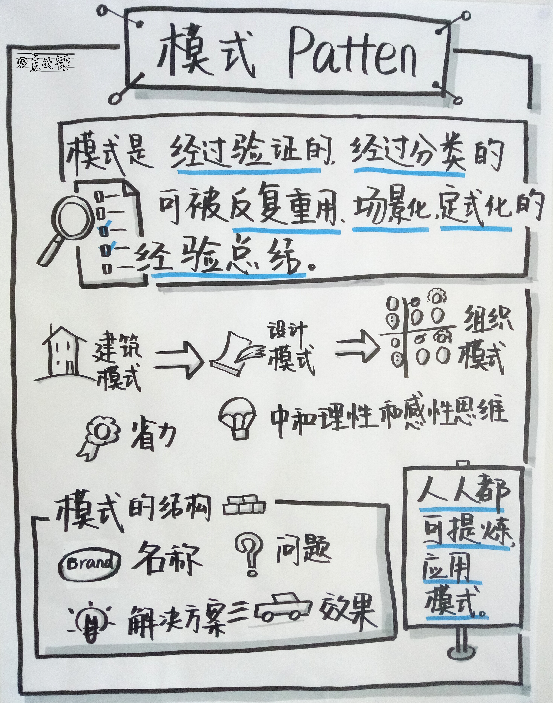
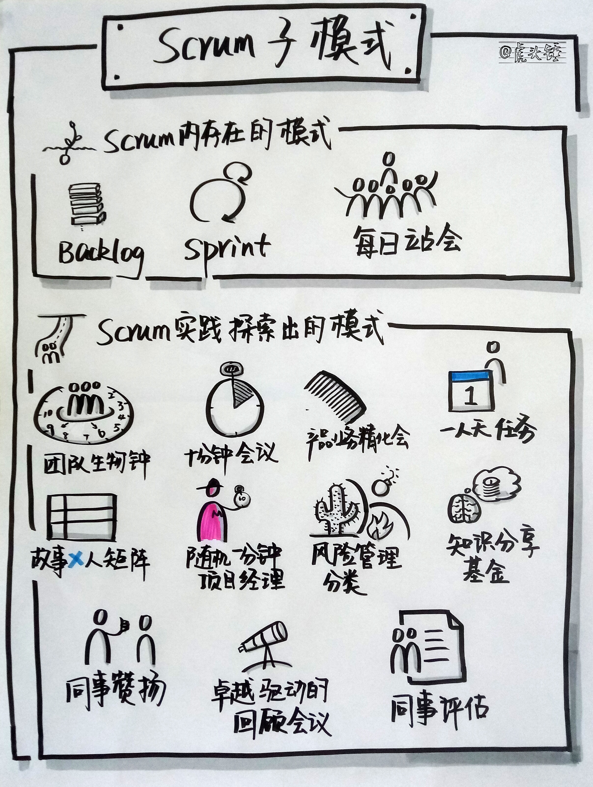
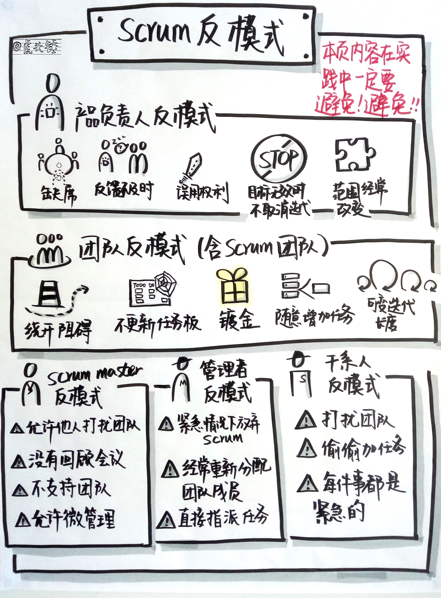

自克里斯托弗亚历山大发明建筑模式，经由设计模式，发展到组织模式。模式是一种经过验证的、经过分类的、可以被反复重用的、场景化、定式化的经验总结。模式思维是理性和感性思维的中和，是人固有的一种能力。模式的好处是省力。敏捷管理，也存在一些这样的模式。
本文介绍的模式可分为三大类。第一类是 Scrum 本身存在的模式，第二类是在 Scrum 活动中探索出来的模式，第三类是 Scrum 反模式。
Scrum 中存在的模式

这部分模式可以帮助我们更好地理解和实施 Scrum，以及评估和改进 Scrum 的实施，也能帮助我们理解 Scrum 的发明。
模式名称：Backlog
解决的问题：
在本质上偏于不确定性的项目中需要知道下一步做什么。需要一种组织方法使得在项目的任何阶段都易于知道下一步要做什么。
甘特图方法事先定义任务和锁定时间，无法满足不确定性环境下的项目管理要求。
完全不管也不是一种好方法。
解决方案：
用 Backlog 组织工作。
- Backlog 是一个排好优先级的列表。高优先级的工作先做。
- Backlog 的总合是产品，Backlog 中工作的完成意味着产品愿景的实现。Backlog 是动态管理的，以便完成的产品是合适的、有竞争力和有用的。
- Backlog 的内容来源很多。可以来自市场、销售、技术、开发部门和客户。
- 只有一个人对 Backlog 排序。这个人对产品愿景的实现负责。
- 根据市场需要和组织预算，一个或多个 Scrum 团队工作于一个 Backlog。团队从 Backlog 中选择一个迭代可以完成的工作项。
- 团队在一个迭代中选择的工作要有一定的内聚度，构成迭代目标。团队在一个迭代内的工作，是为了完成迭代目标。
- 团队把工作分解为任务，以便完成迭代目标。
- Backlog 这个简单的物件，上溯产品愿景，下达具体的工作项管理。
达到的效果：
项目中的所有工作根据客户需要和团队能力动态排序。
模式名称：Sprint
解决的问题：
- 工作中涉及探索、创造与测试，而不是简单重复的机械式工作。
- 需要优化沟通和信息共享。
- 需要在一个时间盒里承诺完成来自 Backlog 的一定的工作量。
- 团队需要无打扰地工作，管理层和客户需要看到进展。
- 预先计划和命令与控制的方式行不通。
解决方案：
- 给开发人员空间进行创造性的工作，学习探索，做实际的工作，免受外部干扰，运用机会和洞见来优化工作方式。
- 同时显示真正的进展让管理者和干系人有信心。
- 以短周期，小团队，来承载 Backlog 中的一段工作，并产生可交付的产品。
- 聚焦，而不是微管理。焦点有不同层级的颗粒度，迭代层级，是团队和干系人共同关注的焦点。迭代之下的焦点和颗粒度，如每天的工作，更多由团队关注就可以了。
- 在一个 Sprint 中，外部干扰被排除。团队内外及干系人对这一点有共识。
- 团队在过程中可调整工作方式。团队以最好的方式，使用他们的技能经验和创造力，专注于手上的工作，产生可见、可用和可展示的交付。
- 创建安全的时间盒，并向客户和干系人做出可信的承诺。
- 是团队主动进行的承诺，和对创造性的工作和工作方式的优化。
达到的效果：
- 所有参与者高度有效而又各有侧重的所有权，包括团队、干系人和客户。
- 最大可能完成计划的工作。在每一个周期结束的时候，干系人可以影响和调整后续迭代的计划。因而使得长期计划具有极大的灵活性。
- 每日站会的高度可见性，可以帮助发现浪费并很快回归真正的工作。
- 为了能够选出迭代的工作，强制产品负责人更好地对 Backlog 排优先级。
- 不适用于需要高度指导的人。
模式名称：每日站会
解决的问题：
- 需要一个方法来控制经验主义和不可预测的流程，例如软件开发，科研，艺术项目和创新设计等。
- 对于需要探索、创造性和测试的工作，精确估算是困难的。
- 过渡计划不会增加可预测性，只会浪费时间。太过详细和锁定细节日程的计划也难以执行。
- 太过频繁的日常跟踪浪费时间，还会打扰开发人员。
- 太多跟踪也无助于计划的完成。
解决方案：
- 团队每天碰面15分钟，回答三个问题：昨天完成了什么，今天打算完成什么，遇到了什么困难。
- 每天发生在同一时间同一地点，强化团队状态、问题和计划的社会化。
- 是大家主动参与的一种目标、趋势和风险追踪。
达到的效果：
- 增加紧迫感。
- 提升知识分享，社会化，外化，内化和组合知识（参见野中郁次郎的知识管理、场理论和 SECI 模型）。技术专家成为社群资产。
- 鼓励沟通和诚实。
- 提升归属感。
- 转变文化。通过透明，提升大家对目标的关注和主动参与，进而打磨流程，促进从根本上解决问题，建立学习型组织。
- 高度可见的项目状态。
- 高度可见的个人生产力。通过同事压力促进卓越。
- 更少因阻碍造成的浪费。阻碍被及时发现和解决。
- 更少因等待造成的浪费。通过细颗粒度的协作减少等待。
- 提升团队内的社交。建立快乐高效的团队。
Scrum 活动中探索出来的模式

这部分的模式是作者在 Scrum 的使用中探索出来的模式，可以根据团队情况试用并调整。
模式名称：团队生物钟
解决的问题：
- 使团队成员更能感受团队工作的节律。
- 使团队成员之间的合作更有节拍。
- 使团队从良好惯性中受益。
解决方案：
- 团队生物钟由团队共同讨论制定和调整。
- 团队生物钟有两种，每天级别的和迭代级别的。
- 在每天级别的团队生物钟里，大概包括以下四种时间。
- 每日站会时间，15分钟。
- 站会后讨论时间，大概1小时。不是全员参与，话题和人按需设置。
- 团队核心时间，大家都能找到彼此且欢迎骚扰的时间，可以选取每天的两个时间段。
- 私密时间，即不欢迎打扰的时间，个人可以集中精力做一下需要专注的事。
- 迭代级别的团队生物钟也大概包括四种时间。
- 日常工作时间。
- Scrum 的五个会议时间。
- Scrum 之外的会议时间，比如知识分享，代码评审等。
- 发布的准备时间和发布时间。
- 迭代级别及每日级别的各种生物钟要形成节律。
产生的效果：
- 各项活动更能准时高效开展。
- 团队成员有专注的时间做专注的事情。
- 工作的节律感带来更高的员工满意度。
- 好习惯帮助减少团队活动和任务间的切换成本，产生效益。
模式名称：会议议程精确到十分钟。
解决的问题：
- 会议目的不明确，流程不清晰，执行不聚焦，效率低。
解决方案：
- Scrum Master 提前收集议题，设计议程，尽量切割到以十分钟为颗粒度。
- 确实不能切割的，可以以20分钟或30分钟为颗粒度。对于不能切割的，也可以寻找一些切割的角度，帮助会议的焦点有效流动，即所有人能同时有效地关注一个点，当一个点关注完，流动到下一个点。
- 在执行每一议程前声明时间盒。
- 执行时可以根据情况调整，并为下一次议程设计提供经验。
达到的效果：
- 会议整体效率更高。
- 在某个小议程，目标更明确，团队更专注。
- 通过提升会议的效率与效能，提升团队满意度，更好地完成团队目标。
模式名称：产品列表业务精化会与技术精化会
解决的问题：
- 如果只讨论业务，不讨论技术方案，无法进行估算。因此到了计划会上也无法做出靠谱的计划和承诺。
- 在同一个精化会上既讨论业务也讨论技术，时间不够，而且团队的准备度也不足。
- 把技术方案的制定留到会后，可能受其他任务的挤压，无法确保能制定出。
解决方案：
- 把精化会分解为两个，业务精化会和技术精化会。
- 在业务精化会上，集中精力梳理业务需求。
- 识别出需要提前制定技术方案的故事和可以直接带到计划会上的故事。
- 对于需要制定技术方案的故事，指定专人调查，并在稍后的时间举行技术精化会，产生技术方案。
- 两个精化会的时间都固化。
产生的效果：
- 业务精化会聚焦于业务，主题清晰，效率高。
- 技术精化会专注于技术方案的制定。
- 因此到计划会时可以制定靠谱的计划和承诺。
- 整体工作过程更加有条不紊，团队对完成迭代目标更有信心。
模式名称：一人天任务
解决的问题：
- 培养当日事当日毕。
- 帮助发现障碍。
- 形成流动。
解决方案：
- 尽量把任务的平均大小向一人天靠拢。
- 理解这个模式的目的，而不是照搬形式。
- 任务可以在计划会产生，也可以在每日站会动态产生。
达到的效果：
- 更好的流动。
- 更好的风险识别和管理。
模式名称：故事 X 人矩阵
解决的问题：
- 清晰呈现不同人员在同一个故事上的合作。
- 清晰呈现每人当前手上的任务数。
解决方案：
- 在白板 To Do 列中，按故事带任务两级呈现，故事从上到下反映优先级，任务从左到右反映大致的先后顺序。
- 在 Doing 列中，自左到右按人排列。故事与人形成矩阵。
- 每日站会进行的顺序是按故事泳道，故事驱动。
- 每个故事涉及到的人讲解和拉动任务。
达到的效果：
- 更清晰的合作呈现。
- 更清晰的多任务呈现。
- 更好的故事和任务流动。
模式名称：随机一分钟项目经理
解决的问题：
- 确保在每日站会中，每人都关心团队目标。
- 确保在每日站会中，每人都认真听他人说什么。
- 并以此确保隐性知识传递，团队成员互相学习。
解决方案：
- 在每日站会最后，以随机方法产生一分钟项目经理。
- 一分钟项目经理做五点说明。
- 我们的迭代目标是什么。
- 趋势是什么，是否可控。
- 主要风险和障碍是什么，如何管理。
- 团队士气如何。
- 邀请全体团队成员对完成迭代目标的信心点赞，以创造一个再次思考风险的契机。并宣布散会。
达到的效果：
- 站会中团队成员更好的投入。
- 更好的风险和趋势管理，更好的目标完成。
- 更好的团队凝聚力。
模式名称：Scrum 风险管理分类
解决的问题：
- 风险分类不清晰，难以确定合适的负责人。
- 风险分类与角色职责没有匹配。
解决方案：
- 风险分为三类：与产品和客户相关的，与技术相关的，与社会化相关的。
- 产品和技术相关的，由产品负责人解决。
- 技术相关的，由团队解决。
- 社会化相关的，由 Scrum Master 解决。
- 风险管理可视化。
达到的效果：
- 更好的风险分配。
- 风险管理与角色职责匹配。
- 有意识的风险管理。
模式名称：知识分享基金
解决的问题：
- 给分享者一点激励，更多代表的是团队的认可。
- 让所有人，不管是分享者还是参与者，都成为分享的主动拥有者。
解决方案：
- 由团队或个人众筹知识分享基金，不用太多。
- 每迭代固定设一个知识分享时间，分享内容不限，只要对团队或项目有帮助。
- 分享者主动提出分享话题。
- 如多人都想分享，由多位分享者协调分享时间。
- 每次分享结束时，给分享者一个小礼物。
- 选取每次分享的重要照片，形成团队分享相册。
达成的效果：
- 更好的知识传播。
- 更好的团队成员之间的连接。
模式名称：同事赞扬
解决的问题：
- 提供一个团队成员互相感谢的机会，把内心的感谢表达出来。
- 以此加深彼此了解。
- 并形成一个更有凝聚力的团队。
解决方案：
- 在回顾会议开始时，增加一个同事赞扬环节。
- 每人以 Post-It 写下要感谢的人，并把所有 Post-It 放在一起。
- Scrum Master 随机抽取一张，让写的人面向要感谢的人表达感谢，包括感谢的原因。
- 依次过完所有 Post-It。
达到的效果：
- 更高的士气，更好的团队凝聚力。
- 更高的产出。
模式名称：卓越驱动的迭代回顾会议
解决的问题：
- 迭代回顾会议缺乏结构与效率。
- 迭代回顾会议缺乏有利于长期提升的制度化。
解决方案：
- 团队制定一组卓越指标，例如跨职能团队、价值流、团队工作。卓越指标代表团队为了完成产品目标和迭代目标所最看重的东西。
- 针对每一指标，制定一系列子项或检查项。
- 定期更新指标定义。
- 在迭代回顾会上，把卓越指标打印张贴。
- 针对每一指标，集体评估团队做得好的地方和需要改善的地方。产生改善措施。
产生的效果：
- 更系统化结构化制度化的回顾。
- 更持续的改进。
模式名称：同事评估
解决的问题：
- 在传统的由经理进行的评估中，多数员工是不满意的。
解决方案：
- 在每个迭代结束的时候，分配给每个团队成员等量的代币。
- 规则只有一条，就是要把代币送给其他团队成员，自己不能留。至于全部送给一个人，还是平均送给每个人，是当事人自己的决定。
- 根据组织的形态，可以有两种方式：只有结果公开，和结果和过程（即谁送给谁多少）都透明。
- 根据组织的形态，决定代币的用途，如只是兑换小礼品，还是兑换奖金。
- 是否要使用，如何使用，使用的程度，需获得组织和团队的共识。
达到的效果：
- 同事评估更能反映一个人的真实表现。
Scrum 反模式

这部分是在 Scrum 的使用中应该避免的模式。
产品负责人的反模式
- 产品负责人在迭代中大部分时间缺席，不能回答团队的问题。
- 在迭代计划之后，改变故事的范围或验收标准。
- 对于无法实现或不再有效的验收标准，缺乏改变的灵活度。
- 产品负责人不能及时对完成的故事提供反馈。
- 误用取消迭代的权力。
- 在迭代目标不再有效时，也不取消迭代。
开发团队的反模式
- 没有 WIP（进行中的工作项）限制。
- 在遇到阻塞时，开始其他任务，使自己保持忙碌。
- 任务板不能保持更新。
- 工作于没有显示在任务板的工作。
- 镀金，增加不必要的工作。
Scrum Master 的反模式
- 允许管理者或干系人在迭代中打扰团队，让团队从事与迭代目标无关的事情或会议。
- 不能支持需要帮助的团队成员。
- 允许微管理，允许产品负责人向团队分配任务。
- 没有回顾会议。
Scrum 团队的反模式
- 有人没有询问团队就把任务加到迭代列表。
- 不产生交付的迭代。
- 做不是产品负责人认为当前应该做的工作。
- 没有紧迫感。
- 新人加入时，没有接轨计划。
- 可变的迭代长度。
管理者的反模式
- 在紧急情况下放弃 Scrum。
- 经常在团队之间重新分配团队成员。
- 不经产品负责人，直接向团队分配特定任务。
干系人反模式
- 偷偷向团队加入任务。
- 把每件事都当成紧急的。
- 打扰团队。
- 模式是一种语言，语言承载思想。Scrum 中的模式承载了“更好”在不同场景中的实现。下一章探讨精益体系，看作为敏捷起源的精益如何在敏捷中发挥作用。